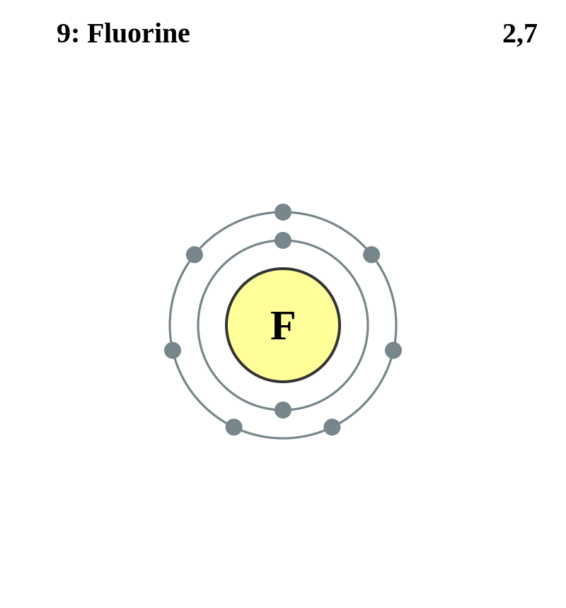

Basic Information about the element
Basic Information about the element
Name: Fluorine
Symbol: F
Atomic Number: 9

1s2 2s2 2p5
The chemical element fluorine is classed as a halogen and a nonmetal .
It was discovered in 1813 by Humphrey Davy.
| Number of Protons/Electrons: | 9 |
| Number of Neutrons: | 10 |
| Atomic Mass: | 18.998404 amu |
| Melting Point: | -219.62 °C (53.530006 K, -363.31598 °F) |
| Boiling Point: | -188.14 °C (85.01 K, -306.652 °F) |
| Classification: | Halogen |
| Uses: | Refrigerants |